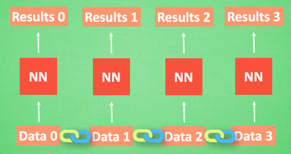
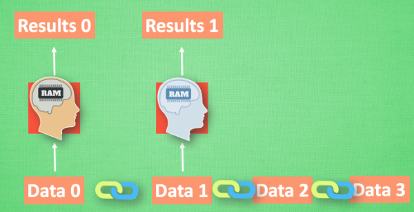
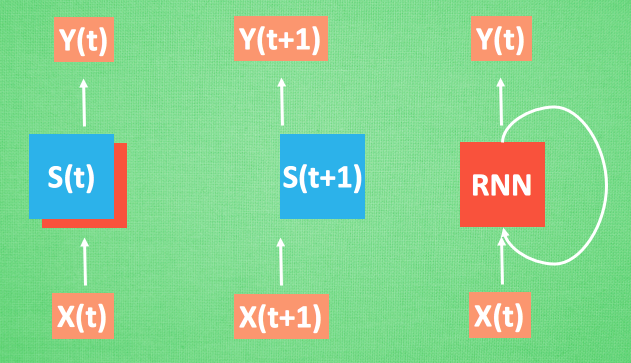

什么是循环神经网络 RNN (Recurrent Neural Network)
作者: 莫烦 编辑: 莫烦
学习资料:
- Tensorflow RNN 例子1
- Tensorflow RNN 例子2
- Tensorflow RNN 例子3
- PyTorch RNN 例子1
- PyTorch RNN 例子2
- Keras 快速搭建 RNN 1
- Keras 快速搭建 RNN 2
- RNN 作曲 链接
今天我们会来聊聊在语言分析, 序列化数据中穿梭自如的循环神经网络 RNN. RNN 是用来干什么的 ? 它和普通的神经网络有什么不同 ? 我会将会一一探讨.
注: 本文不会涉及数学推导. 大家可以在很多其他地方找到优秀的数学推导文章.
RNN 的用途
现在请你看着这个名字. 不出意外, 你应该可以脱口而出. 因为你很可能就用了他们家的一款产品 . 那么现在, 请抛开这个产品, 只想着斯蒂芬乔布斯这个名字 , 请你再把他逆序念出来. 斯布乔(*#&, 有点难吧. 这就说明, 对于预测, 顺序排列是多么重要. 我们可以预测下一个按照一定顺序排列的字, 但是打乱顺序, 我们就没办法分析自己到底在说什么了.
序列数据

我们想象现在有一组序列数据 data 0,1,2,3. 在当预测 result0 的时候,我们基于的是 data0, 同样在预测其他数据的时候, 我们也都只单单基于单个的数据. 每次使用的神经网络都是同一个 NN. 不过这些数据是有关联 顺序的 , 就像在厨房做菜, 酱料 A要比酱料 B 早放, 不然就串味了. 所以普通的神经网络结构并不能让 NN 了解这些数据之间的关联.
处理序列数据的神经网络

那我们如何让数据间的关联也被 NN 加以分析呢? 想想我们人类是怎么分析各种事物的关联吧, 最基本的方式,就是记住之前发生的事情. 那我们让神经网络也具备这种记住之前发生的事的能力. 再分析 Data0 的时候, 我们把分析结果存入记忆. 然后当分析 data1的时候, NN会产生新的记忆, 但是新记忆和老记忆是没有联系的. 我们就简单的把老记忆调用过来, 一起分析. 如果继续分析更多的有序数据 , RNN就会把之前的记忆都累积起来, 一起分析.

我们再重复一遍刚才的流程, 不过这次是以加入一些数学方面的东西. 每次 RNN 运算完之后都会产生一个对于当前状态的描述 , state. 我们用简写 S( t) 代替, 然后这个 RNN开始分析 x(t+1) , 他会根据 x(t+1)产生s(t+1), 不过此时 y(t+1) 是由 s(t) 和 s(t+1) 共同创造的. 所以我们通常看到的 RNN 也可以表达成这种样子.
RNN 的应用
RNN 的形式不单单这有这样一种, 他的结构形式很自由. 如果用于分类问题, 比如说一个人说了一句话, 这句话带的感情色彩是积极的还是消极的. 那我们就可以用只有最后一个时间点输出判断结果的RNN.
又或者这是图片描述 RNN, 我们只需要一个 X 来代替输入的图片, 然后生成对图片描述的一段话.
或者是语言翻译的 RNN, 给出一段英文, 然后再翻译成中文.
有了这些不同形式的 RNN, RNN 就变得强大了. 有很多有趣的 RNN 应用. 比如之前提到的, 让 RNN 描述照片. 让 RNN 写学术论文, 让 RNN 写程序脚本, 让 RNN 作曲. 我们一般人甚至都不能分辨这到底是不是机器写出来的.
如果你觉得这篇文章或视频对你的学习很有帮助, 请你也分享它, 让它能再次帮助到更多的需要学习的人. 莫烦没有正式的经济来源, 如果你也想支持 莫烦Python 并看到更好的教学内容, 赞助他一点点, 作为鼓励他继续开源的动力.